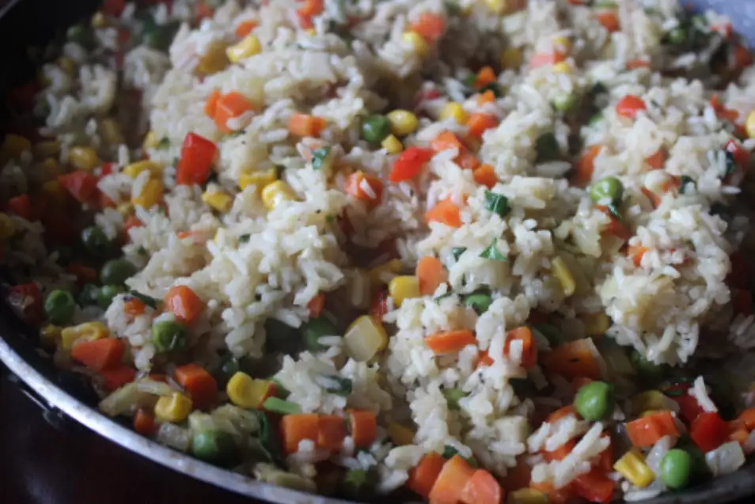

Awesome Rice Pilaf

Description:
Rice combined with a medley of vegetables and spices. A great side dish with chicken and pork. Leftovers are great for lunch the next day.
Ingredients:
- 3 tablespoons butter
- 2 carrots, finely chopped
- 2 stalks celery, finely chopped
- 1 small red bell pepper, diced
- 1 small onion, finely chopped
- 4 cloves garlic, minced
- 3 cups white rice
- 1 (8.75 ounce) can no-salt-added sweet corn, drained
- 1 (15 ounce) can no-salt-added sweet peas, drained
- 5 ½ cups chicken broth
- 1 ½ tablespoons soy sauce
- 1 ½ tablespoons Worcestershire sauce
- 2 teaspoons lemon pepper
- 2 teaspoons dried crushed parsley
- 4 pinches dried crushed thyme
- 1 pinch saffron (Optional)
- salt and ground black pepper to taste
Steps:
-
Melt butter in a large saucepan over medium heat; cook and stir carrots, celery, red bell pepper, onion, and garlic until the vegetables begin to soften, about 5 minutes.
-
Gently stir rice, corn, and peas into vegetables to combine. Pour chicken broth, soy sauce, and Worcestershire sauce into rice mixture. Season with lemon pepper, parsley, thyme, saffron, salt, and black pepper, bring to a boil, and reduce heat to low. Cover and simmer until rice is tender, about 20 minutes. Remove from heat and let pilaf stand covered until grains are separate, 10 to 15 more minutes.
Return to main page